Models
| ChaoticGrowth | A Model that describes a chaotic population growth. |
| Coffee | Simple model that simulates the temperature of a cup of coffee. |
| Daisyworld | An implementation of the daisy world model. |
| Dam | A water in the dam model. |
| Homeostasis | A model to show homeostasis taking place. |
| LimitedGrowth | A model that simulates limited growth. |
| Lorenz | Classic Lorenz Model to study chaos. |
| MonoLake | A model for the Mono Lake problem. |
| PopulationGrowth | Simple model that simulates the growth of two populations. |
| PredatorPrey | Model that implements predatory-prey dynamics. |
| RandomWalk | Simple random walk model, where a given value can be added by one or subtracted by one randomly. |
| RoomTemperature | Simple model that simulates the temperature of three rooms. |
| SIR | A Susceptible-Infectious-Recovered (SIR) Model to study epidemics. |
| Tub | A simple water in the tub model. |
| Yeast | A yeast growth model. |
ChaoticGrowth
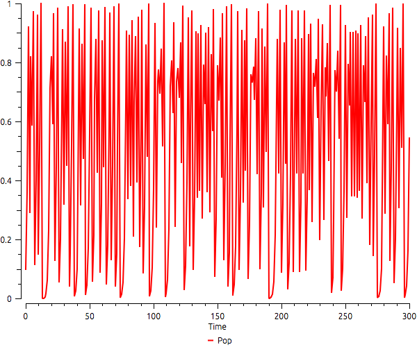
A Model that describes a chaotic population growth.
Parameters
- finalTime: The final time of the simulation. The default value is 300.
- pop: The initial population. The default value is 0.1.
- rate: The rate that multiplies the population size in each time step. The degault value is 4.
Coffee
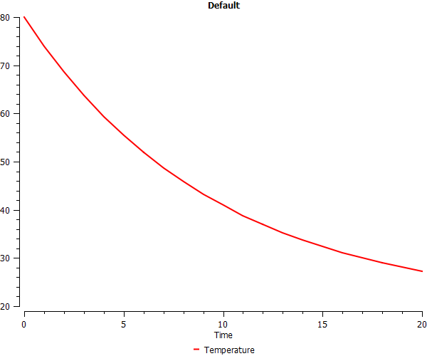
Simple model that simulates the temperature of a cup of coffee.
Parameters
- finalTime: The final time of the simulation in minutes. The default value is 20.
- roomTemperature: The temperature of the room. The default value is 20.
- temperature: The initial temperature of the cup of coffee. The default value is 80.
Daisyworld
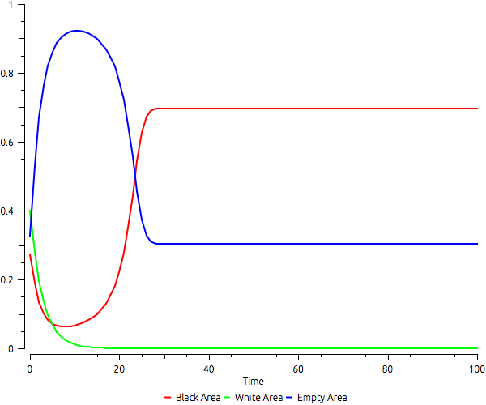
An implementation of the daisy world model. Wood, A. J., G. J. Ackland, J. G. Dyke, H. T. P. Williams, and T. M. Lenton (2008), Daisyworld: A review, Rev. Geophys., 46. Daisyworld consists of two different types of daisy, which may be considered distinct species (because there is no possibility of mixed replication of the types) or, alternatively, as distinct phenotypes of the same species. The two types are identified as either black or white according to their reflectivity or albedo.
Parameters
- blackAlbedo: The albedo of black area. The default value is 0.25.
- blackArea: The initial area of black daisies. The default value is 0.273.
- decayRate: The death rate for all daisies.
- emptyArea: The initial empty area. The default value is 0.327.
- finalTime: The final time of the simulation. The default value is 100.
- planetArea: The total area of the planet. The sum of the arguments whiteArea, blackArea, and emptyArea should be equals to this value. The default value is 1.
- soilAlbedo: The albedo of empty area. The default value is 0.5.
- sunLuminosity: Sun luminosity (this is the main variable of the model). Values beteween 0.70 and 1.6 support life in Daisyworld.
- whiteAlbedo: The albedo of white area. The default value is 0.75.
- whiteArea: The initial area of white daisies. The default value is 0.4.
Dam
A water in the dam model.
Parameters
- changedYear: The year in which water values change. The default value is 1970.
- consumePerPerson: The total amount of water per inhabitant. The default value is 10.
- countYear: The flag in which defines whether count or not the years . The default value is false.
- currentYear: The starting year. The default value is 1950.
- finalTime: The final time of the simulation in months. The default value is 1000.
- growth: The comsumption amount of kWh produced by cubic meters. The default value is 100.
- inFlow1: The flow of water into the dam each first season. The default is 2e9.
- inFlow2: The flow of water into the dam each second season. The default value is 1.5e9.
- kWh2cubicMeters: The total amount of kWh produced by cubic meters. The default value is 100.
- population: The total amount of inhabitants. The default value is 1e5.
- water: The initial stock of water measured in m³. The initial value is 5,000,000,000.
Homeostasis
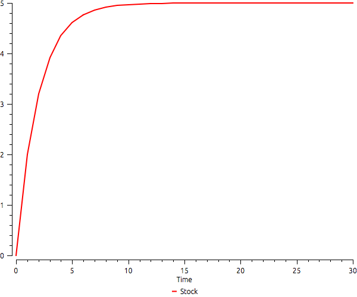
A model to show homeostasis taking place.
Parameters
- finalTime: The final time of the simulation. The default value is 30.
- gain: The fixed increment in the stock in each time step. The default value is 2.0.
- rate: The rate that multiplies the stock in each time step. The default value is -0.4.
- stock: The initial stock. The default value is 0.
LimitedGrowth
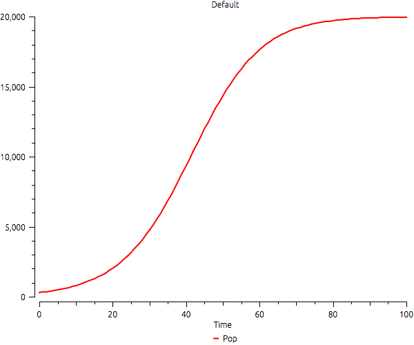
A model that simulates limited growth.
Parameters
- capacity: The maximum amount of individuals.
- finalTime: The number of simulation steps.
- pop: The initial population.
- rate: The growth rate of the population.
Lorenz
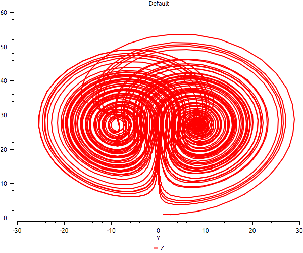
Classic Lorenz Model to study chaos. Lorenz, Edward Norton (1963). "Deterministic nonperiodic flow". Journal of the Atmospheric Sciences 20 (2): 130-141. The Lorenz system is a system of ordinary differential equations first studied by Edward Lorenz. It is notable for having chaotic solutions for certain parameter values and initial conditions. In particular, the Lorenz attractor is a set of chaotic solutions of the Lorenz system which, when plotted, resemble a butterfly or figure eight (from https://en.wikipedia.org/wiki/Lorenz_system).
Parameters
- beta: The value of beta from the differential equations. The default value is 8/3.
- delta: The integration step (the model is non-linear). The default value is 0.01.
- finalTime: The final simulation time. The default value is 10,000.
- rho: The value of ro from the differential equations. The default value is 28.
- sigma: The value of sigma from the differential equations. The default value is 10.
- x: The initial x value. Default is one.
- y: The initial x value. Default is one.
- z: The initial x value. Default is one.
MonoLake
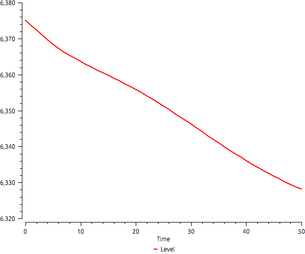
A model for the Mono Lake problem. See the chapter in the "Modelling the Environment" book, by Andrew Ford. This is the implementation of Mono Lake's first model.
Parameters
- evapRate: The evaporation rate in feet/year.
- export: The amount of water taken out from the lake in KAF/year. 1 KAF = 1,233,481.85 m3.
- finalTime: The final time of the simulation. The default value is 50.
- level: The initial level of the lake. It is updated every time step according to the amount of water in the lake.
- otherIn: Other inputs of water to the lake in KAF/year.
- otherOut: Other output of water from the lake in KAF/year.
- precRate: The precipitation rate in feet/year.
- runoff: The amount of water that gets in the lake by runoff in KAF/year.
- waterInLake: The amount of water in the lake in the beginning of the simulation.
PopulationGrowth
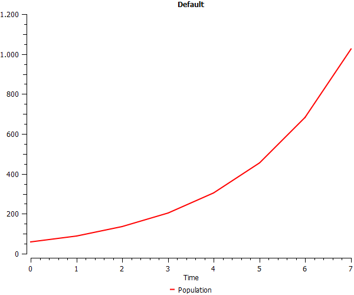
Simple model that simulates the growth of two populations.
Parameters
- finalTime: The final time of the simulation. The default value is 100.
- growth: The growth rate of the first population. The default value is 0.5, growing fifty percent in each time step.
- growthChange: The change of the growth rate. The growth rate is multiplied by this value in each time step. The default value is 1, meaning that growth rate does not change.
- population: The initial size of the first population. The default value is 60.
PredatorPrey
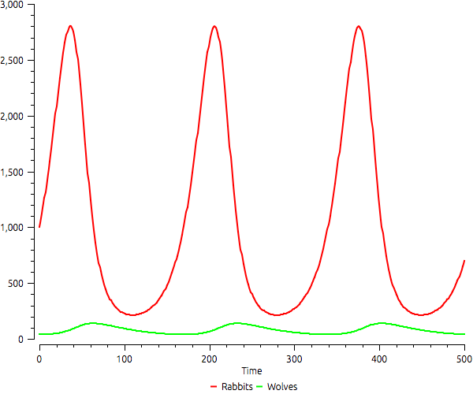
Model that implements predatory-prey dynamics.
Parameters
- finalTime: The final time of the simulation. The minimum value is 50 and the default value is 500.
- period: The time interval where the number of predators and preys are updated. The observation of the model occurs at one time step, therefore if this value is 0.1 then it will update the populations ten times for each update in the charts.
- predator: A number between 10 and 40 with the initial number of predators.
- predDeath: A number between 0.001 and 0.5 with the probability of a predator to die. The default value is 0.02.
- predGrowthKills: A number between 0 and 0.01 with the increase in the size of the predator population per eack prey killed. The default value is 0.00002.
- prey: A number between 100 and 1000 with the initial number of preys.
- preyDeathPred: A number between 0.0001 and 0.01 with the probability of a prey to be killed by a predator. The default value is 0.001.
- preyGrowth: A number between 0.01 and 1 with the probability of a prey to reproduce. The default value is 0.08.
RandomWalk
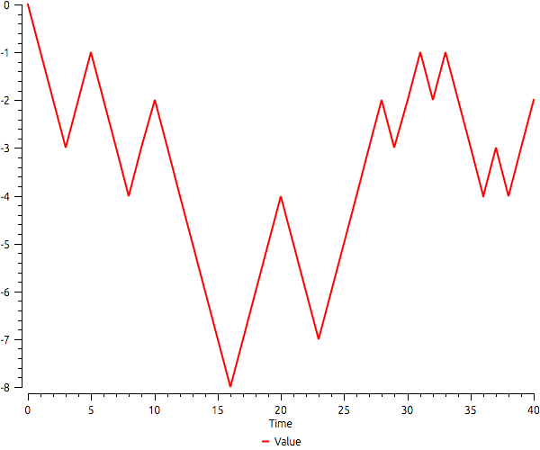
Simple random walk model, where a given value can be added by one or subtracted by one randomly.
Parameters
- finalTime: The final time of the simulation. It should be at least 10. The default value is 100.
- prob: The probability of adding one to the value in each time step. The available values are 0, 0.3, 0.5 (default), 0.7, 0.95, and 1.
- value: The initial value. The default value is zero.
RoomTemperature
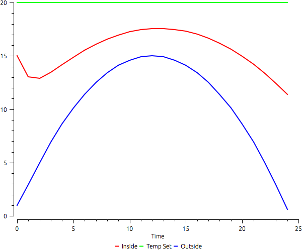
Simple model that simulates the temperature of three rooms.
Parameters
- finalTime: The final time of the simulation. The default value is 100.
- inside: The temperature inside the room. The default initial value is 15.
- lossToOutside: The percentage of heat loss every time step according to the difference between the temperature inside and outside the room. The default value is 0.3.
- outside: The temperature outside the room. The default value is 1.
- tempSet: The selected temperature in the thermostat. The default value is 20.
- thermalInertia: The percentage of input heat every time step according to the difference between the temperature inside the room and the one selected in the thermostat. The default value is 0.3.
SIR
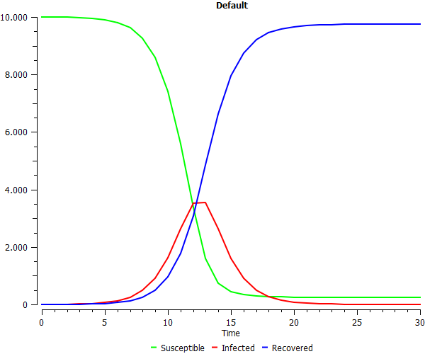
A Susceptible-Infectious-Recovered (SIR) Model to study epidemics.
Parameters
- contacts: The number of contacts each infected has each time step. The default value is 6.
- duration: The duration of the disease in days. The default value is 2.
- finalTime: The final simulation time, in days. The default value is 30.
- infected: The initial indected population. The default value is 2.
- maximum: A threshold of infected people that activates a public policy. The policy asks people to start leaving their houses, which cuts the contacts between people by half.
- probability: The probability of a susceptible person getting infected after a contact with an infected one. The default value is 0.25.
- recovered: The initial recovered population. The default value is 0.
- susceptible: The initial susceptible population. The default value is 9998.
Output
- finalInfected: A table with number of infected individuals in each simulation step.
- maxInfected: The maximum number of infected individuals along the simulation.
Tub
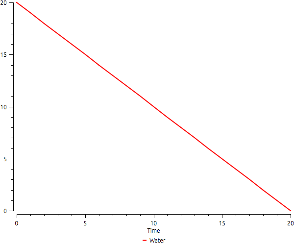
A simple water in the tub model.
Parameters
- finalTime: The final time of the simulation in minutes. The default value is 8.
- inFlow: The flow of water into the tub each ten minutes. The default is zero.
- outFlow: The flow of water outside the tub each minute. The default is 5.
- water: The initial stock of water measured in gallons. The default value is 40.
Yeast
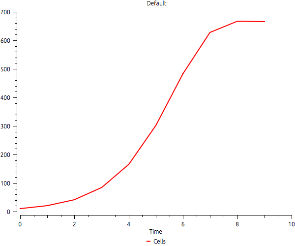
A yeast growth model.
Parameters
- capacity: The total capacity of the environment. The default value is 665.
- cells: The initial number of cells. The default value is 9.6.
- finalTime: The final simulation time. The default value is 9.
- rate: The growth rate of the cells. The default value is 1.1.
Output
- finalCells: A vector with the quantity of cells in each time step.